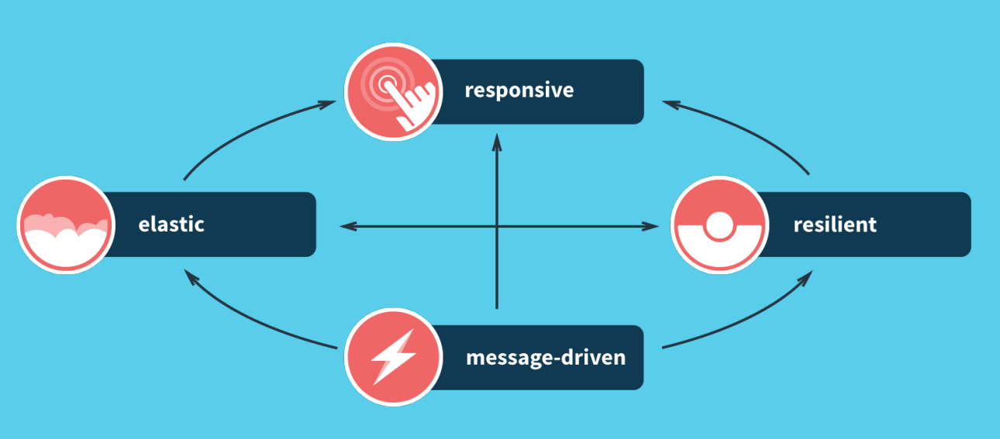
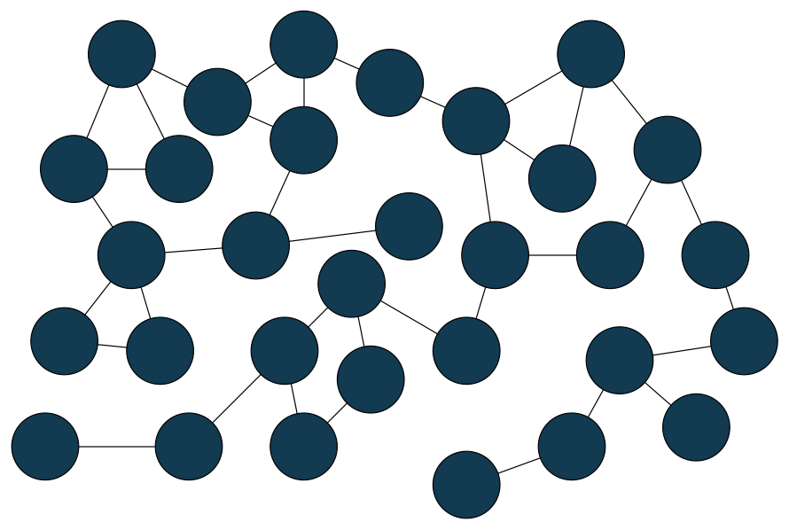
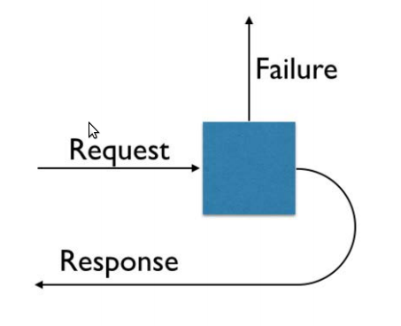
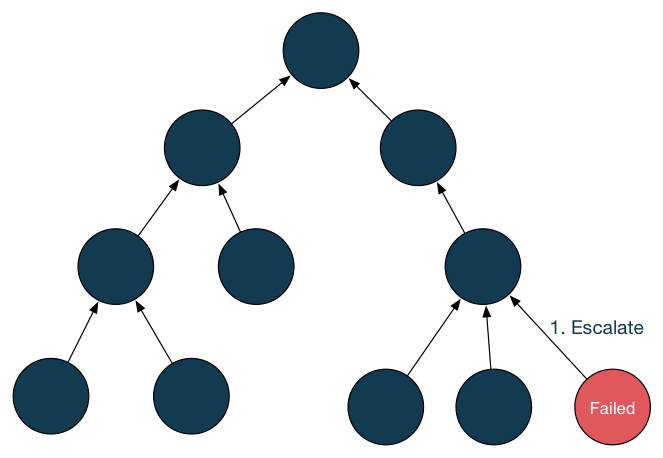
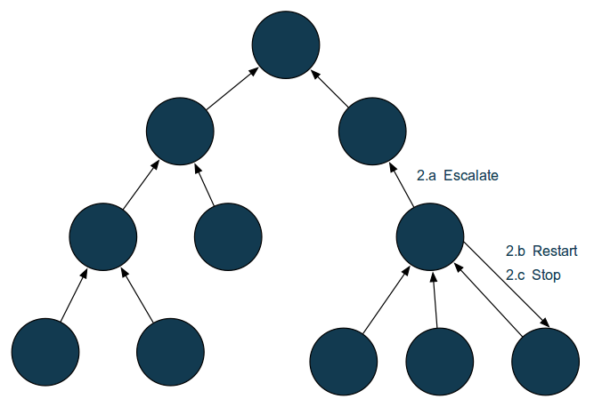
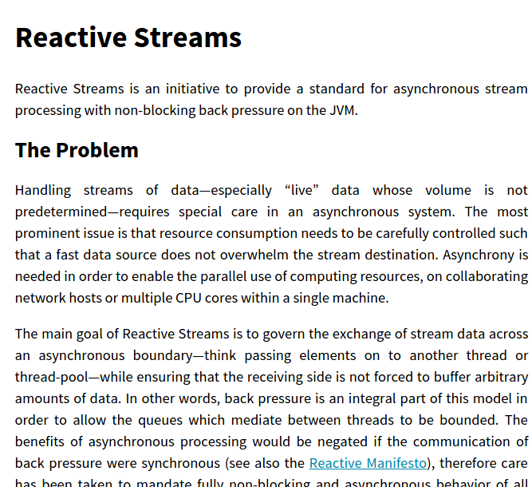
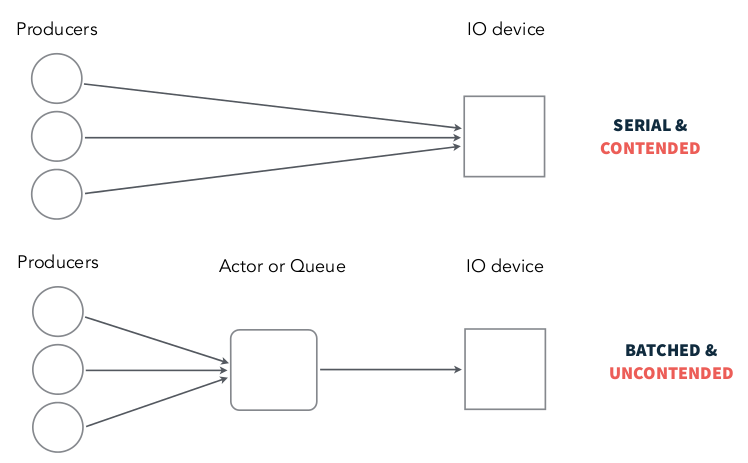
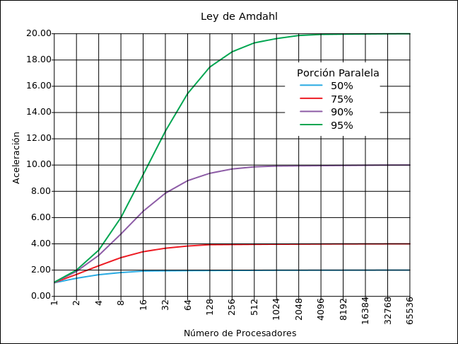

Reactive
Systems
Overview
Guillermo Polito
Why Reactive?
internetlivestats.comWhy Reactive?
Quick summary. In 10 years:
| 2005 | 2015 | |
|---|---|---|
| Internet users | 1000 millions | 3000 millions |
| YouTube | was born on February, 2005 | more than 1000 million users |
| 5.5 million active users | 1.380 million active users | |
| wasn't born yet | 288 million active users |
Why Reactive?
Some things have changed during this years...
| Almost yesterday | Today | |
|---|---|---|
| Server nodes | 10's | 1000's |
| RAM | expensive | cheap |
| Network | slow | fast |
| Data volume | GBs | TBs -> PBs |
| Response times | seconds | milliseconds |
| Maintenance downtimes | hours | none |
Why Reactive?
Today's demands are simply not met by yesterday’s software architectures
A new coherent approach to Systems Architecture is needed...
Reactive Systems
Traits
 reactivemanifesto.orgResponsive
“A responsive system is quick to react to all users — under blue skies and grey skies — in order to ensure a consistently positive user experience.”
Responsive Systems
offer:
- rapid and consistent response times
- reliable upper bounds to deliver a consistent QoS
should:
- detect problems quickly and dealt with them effectively
Reactive Systems
Traits
reactivemanifesto.orgResilient
“The ability of a sustance or object to spring back into shape.”
“The capacity to recover quickly from difficulties.”
Merriam Webster
Resilient
The system should be responsive
in the face of failure.
Failure != Error
Examples of failures:
- program defects causing corrupted internal state
- hardware malfunction
- network failures
- troubles with external services
Resilient - how?
Failure Recovery in OOP
Resilient - how?
Failure Recovery in OOP
- single thread of control
- if the thread blows up => you are screwed
- no global organization of error handling
- defensive programming tangled with business logic,
scattered around the code
Resilience is by design
ok... but how?
Resilience is by design - How?
- containment
- delegation
- isolation
let's review this concepts...
Resilience is by design - How?
- containment:
=> bulkheads
=> circuit breaker - delegation
=> supervision
Resilience is by design - How?
- isolation (decoupling, both in time and space)
- in time:
sender and receiver don't need to be present at the same time for communicate
=> message-driven arquitecture
- in space (defined as Location Transparency):
the sender and receiver don't have to run in the same process, and this might change during application's lifetime
=> message-driven arquitecture
Bulkheads
+
Supervison
Bulkheads help us to:
- isolate the failure
- compartmentalize
- manage failure locally
- avoid cascading failures
this concept should be used together with supervison!
Supervison
Supervison
Core Concept
Supervisor hierarchies with Actors
Supervisor hierarchies with Actors
Supervisor hierarchies with Actors
Configuration in Akka
import akka.actor.OneForOneStrategy
import akka.actor.SupervisorStrategy._
import scala.concurrent.duration._
override val supervisorStrategy =
OneForOneStrategy(maxNrOfRetries = 10, withinTimeRange = 1 minute) {
case _: ArithmeticException => Resume
case _: NullPointerException => Restart
case _: IllegalArgumentException => Stop
case _: Exception => Escalate
}
Circuit Breaker
Circuit Breaker
PROBLEM - Example Situation
- web app interacting with a remote WS
- remote WS is overloaded, and its DB takes a long time to respond with a fail
- => WS calls fail after a long period of time
- => web users noticed that form submissions takes time to complete
- => web users start to click the refresh button adding more requests!
- => web app fails due to resource exhaustion, affecting all users across the site
failures in external dependencies shouldn' t bring down an entire app
Circuit Breaker
Solution Proposal
- monitor response times
- if time consistently rises above a threshold, either:
- fail fast approach, or...
- route following requests to an alternative service
- monitor the original service
- if the service is back in shape, restore to the original state
- if not, continue with the same approach
Circuit Breaker
Akka Implementation
- implements fail fast approach
- provide stability
- prevent cascading failures in distributed systems

Circuit Breaker
Akka Implementation
configuration
- max. number of failures
- call timeout: response time threshold
- reset timeout: we'll see this later
Circuit Breaker
Akka Implementation
Closed state (normal operation)
- Exceptions or calls exceeding the configured callTimeout increment a failure counter
- Successes reset the failure count to 0 (zero)
- When the failure counter reaches a maxFailures count, the breaker is tripped into Open State
Circuit Breaker
Akka Implementation
Open State
- All calls fail-fast with a CircuitBreakerOpenException
- After the configured resetTimeout, the circuit breaker enters a Half-Open State
Circuit Breaker
Akka Implementation
Half-Open State
- The first call attempted is allowed through without failing fast
- All other calls fail-fast with an exception just as in Open state
- If the first call succeeds, the breaker is reset back to Closed state
- If the first call fails, the breaker is tripped again into the Open state for another full resetTimeout
Circuit Breaker
Akka Implementation
import akka.pattern.CircuitBreaker
def dangerousCall: String = "This really isn't that dangerous"
val breaker =
CircuitBreaker(system.scheduler,
maxFailures = 5,
callTimeout = 10.seconds,
resetTimeout = 1.minute)
def dangerous: Future[String] =
breaker.withCircuitBreaker(Future(dangerousCall))
Back Pressure
Problem Description
speed(publisher) > speed(suscriber)
bounded buffer => drop messages + require re-sending
unbounded buffer => buffer overflow
Back Pressure - Solution
speed(publisher) < speed(suscriber)
Back Pressure
this mechanism is included into the Reactive Stream specification
Reactive Streams
Stream processing on the JVM:
- Asynchronous
- Back-pressured
- Standarized
Available implementations:
- Akka Streams
- Reactor Composable (DSL for groovy, clojure)
- RxJava
- Ratpack
Reactive Streams
Akka Streams Example
implicit val system = ActorSystem("Sys")
val mat = FLowMaterializer(...)
Flow(text.split("" "").toVector).
map(word => word.toUpperCase).
foreach(transformed => println(transformed)).
onComplete(mat) {
case Success(_) => ...; system.shutdown();
case Failure(e) => ...; system.shutdown();
}
Reactive Systems
Traits
reactivemanifesto.orgElasticity
Scalability
+
automatic resource management
slidesLanguageService.
setLang(Lang.SPANGLISH)
Scalability - Qué significa? - (1)
la performance del sistema
es proporcional
a los recursos reservados
la performance del sistema
es proporcional
a los recursos reservados
Scalability - Qué significa? - (2)
Scale OUT & IN (horizontal)
+
Scale UP & DOWN (vertical)
Scale OUT & IN (horizontal)
+
Scale UP & DOWN (vertical)
Scalability
Por qué es necesario?
- por ejemplo: en el dominio eCommerce:
- los picos de tráfico mas altos se dan cuando cuando estás vendiendo bien
- durante un pico de tráfico la gente basicamente quiere darte su dinero :)
Cómo lo logramos?
- Never Block -> Go Async
- Share Nothing -> Use Immutable Data
- Location Transparency
Never Block -> Go Async
Share Nothing -> Use Immutable Data
Location Transparency
Scale OUT = Scale UP
la Elasticidad
requiere de una
Message-driven Arquitecture
Reactive Systems
Traits
reactivemanifesto.orgMessage Driven Arquitecture
Message Driven
Por qué es importante?
la comunicación asincrónica basada en pasaje de mensajes otorga/permite:
- bajo acoplamiento
- aislamiento
- location transparency
- mantenibilidad y flexibilidad para evolucionar - interfaces enfocadas en el contenido de la comunicación
- lower latency & higher throughput
- scale up & out
- load management and flow control - a través del monitoreo de colas de mensaje y aplicando back-pressure
Reactive Systems
Traits
reactivemanifesto.orgQué posibles tecnologías cumplen con todos estos requerimientos?
| Feature | Akka |
|---|---|
| containment (bulkheads) | yes (actors) |
| asynchronous & non blocking message-passing | yes |
| fault tolerance | yes (supervision) |
| back-pressure | yes (by using Akka Streams) |
| circuit breaker | yes |
| location transparency | yes (ActorRef concept) |
Referencias
Reactive Design Patterns - Roland Kuhn and Jamie Allen
Kevin Webber - What is Reactive Programming?
Jonas Boner - Go Reactive: Event-Driven, Scalable, Resilient & Responsive Systems